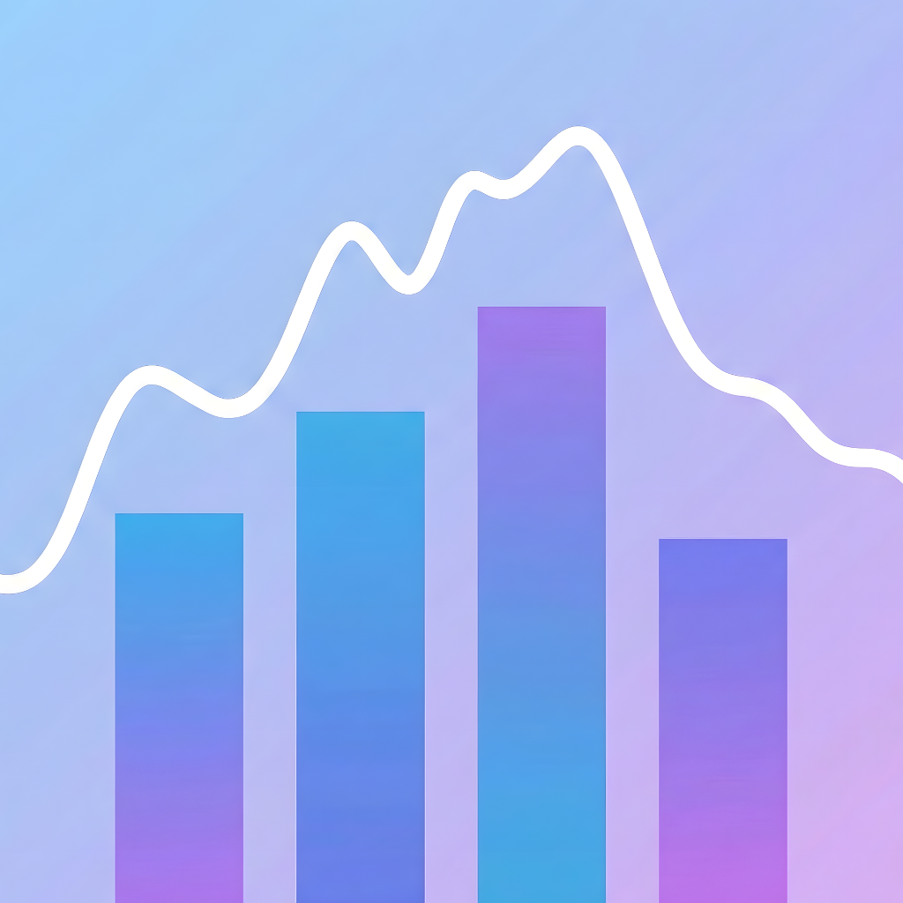
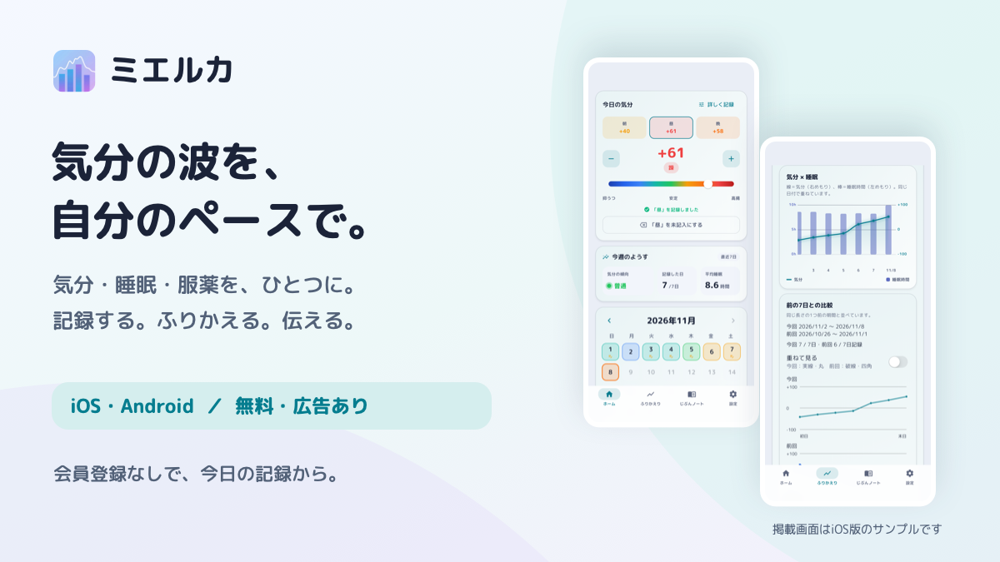

ミエルカ気分の波を、
自分のペースで。
気分・睡眠・服薬を、ひとつに記録。
日々のふりかえりと、診察で伝える準備につなげるアプリです。
毎日すべてを埋めなくても大丈夫。書けることから始められます。
会員登録不要・無料（広告あり）。月額購入はありません。

書けることから、今日の記録。
朝・昼・晩の気分や睡眠、服薬、メモをまとめて記録できます。
続けた記録が、ふりかえりに。
7日から1年までのグラフで、自分のリズムを確認。期間と項目を選び、診察用レポートにまとめられます。
調子に合わせた、じぶんの備え。
サインや対処法、続けたいこと、連絡先を「じぶんノート」に残せます。
記録とデータについて
記録は端末内に保存します。アプリロックと手動バックアップ・復元、端末内の自動バックアップを利用できます。自動バックアップも同じ端末の控えです。端末の故障やアプリ削除に備え、大切な記録は手動で書き出してください。
画面下部にバナー広告を表示します。任意のAIふりかえりは、動画広告を最後まで見ると1日5回まで利用できます。利用状況などによって使えない場合もあります。AI利用時は送信内容を確認し、同意した場合に対象の記録とじぶんノートの文章などを外部サービスへ送ります。詳しい範囲はプライバシーポリシーをご確認ください。
サポート
プライバシーポリシー
利用規約
お問い合わせ
ご意見・不具合のご報告は、メールでお願いします。
hoomaa1432@gmail.com
大切なお知らせ
ミエルカは医療機器ではなく、診断・治療を行うものではありません。 体調に不安があるときは、医師などの専門家にご相談ください。